Jindo To jQuery
Created by 손찬욱 / chanuk.son
2004년
네이버 검색시장 1위
의 탄생
네이버와 함께 성장한 Jindo
그리고 jQuery에 대한 이야기를 하려고 합니다.
Jindo
JavaScript Library 춘추전국시대
 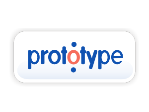
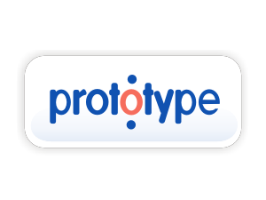

JavaScript Library 춘추전국시대
2004년 ~ 2007년 Google Trend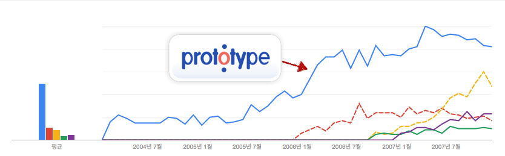
Prototype
http://prototypejs.orgSam Stephenson이 개발
친숙한 Class 스타일의 OO framework
- $, $$, $A, $F, $H, $R, $w 과 같은 유틸리티 함수
- Ajax, Class, Element, Form, Hash, Selector, Template 등 자체 클래스
- Array, Function, Number, Object, String 등 built-in 클래스 확장
2004년 Prototype의 영향을 받은 Jindo1 출시2007년 기존 문제점을 개선한 Jindo2 출시
2007년 이후로 네이버 서비스를
로 개발하기 시작
서비스 경험을 바탕으로 Jindo 제품군 출시
2008년 SmartEditor
블로그, 카페 시즌2
2010년 Jindo Component
네이버 PC 서비스에 적용
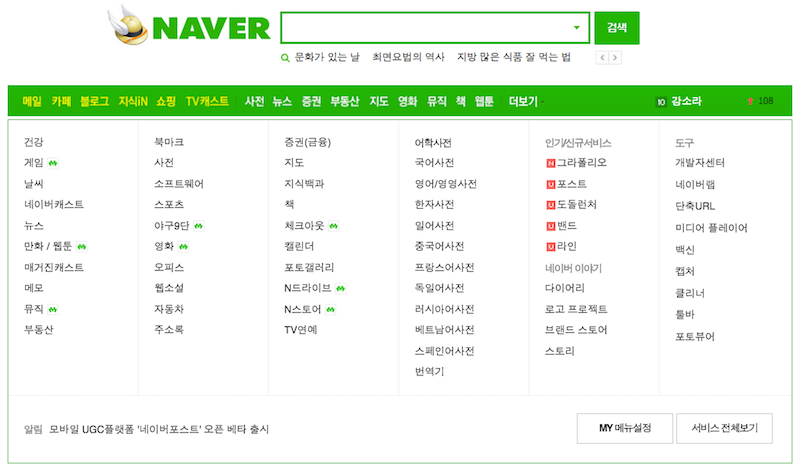2011년 Jindo Mobile Component
네이버 모바일 서비스에 적용
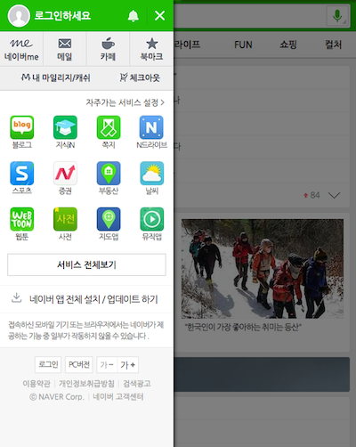네이버 서비스의 85%가 사용
http://jindo.nhncorp.com:6248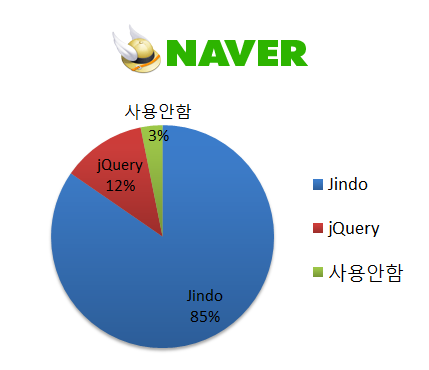
네이버뿐만 아니라 외부에서도 사용
하지만...
시대적 흐름을 막을순 없었다
YUI 개발 중단 발표
2014년 8월 29일. Important announcement regarding YUI 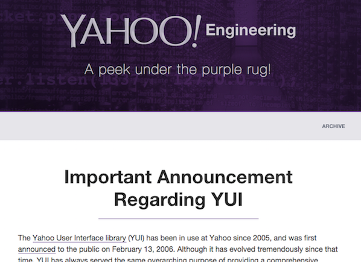we have made the difficult decision to immediately stop all new development on YUI
in order to focus our efforts on this new technology landscape.
jQuery
JavaScript Library
2008년 ~ 2014년 Google Trend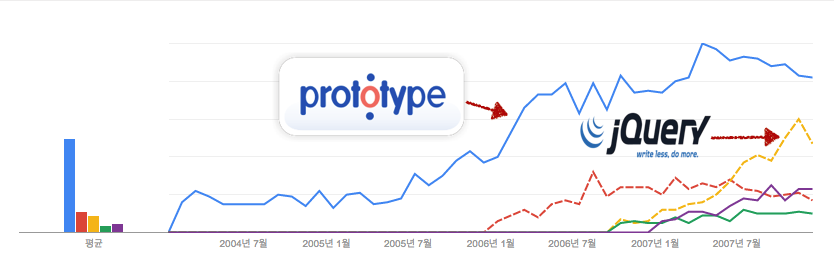
jQuery 얼마나 사용하는가?
from builtwith.com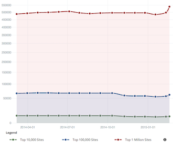 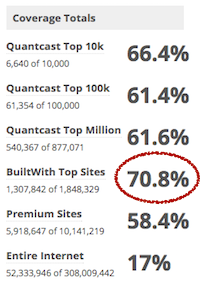
- 70.8%가 jQuery를 사용하고 있음.
- Web Crawling을 할수 없는 다양한 환경에서도 사용되고 있음 Google Chrome add-ons, Mozilla XUL apps and Firefox extensions, Firefox OS apps, Chrome OS apps, Windows 8 Store apps, BlackBerry 10 WebWorks apps, PhoneGap/Cordova apps, Node.js, and even the Sony PlayStation 4
jQuery는 암묵적인 업계 표준
jQuery
http://jquery.comJohn Resig이 개발
2005년 DOM Selector에 대한 고민으로 부터
시작하여 Core Library로 발전함.
- 막강한 DOM Selector와 Method chaining 지원. 코드량 감소
- Plugin 구조를 지원. 개발자의 참여 유도
방대한 커뮤니티와 다양한 레퍼런스를 갖게됨
Jindo 개발자가 알아야 할 jQuery
Jindo와 jQuery의 관심사, 철학은 무엇인가?
의 관심사
크로스 브라우징 문제 해결이 주요 관심사
브라우저에서 발생하는 버그나 특성을 일관성있게 처리하기 위해, 브라우저 bulit-in에 해당하는 객체를 랩핑하는 구조
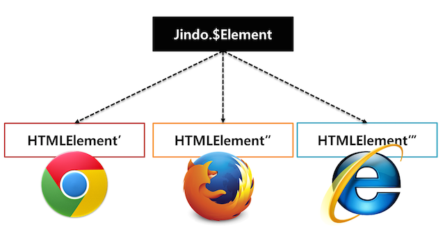
객체 형태와 성격에 따라서
$Agent, $Class, $Element와 같이 다양한 클래스가 존재
의 관심사
write less, do more
코드 간소화 가 주요 관심사
간단한 인터페이스를 가짐
JQuery라는 하나의 객체를 가지고 있고,
jQuery에서 쓰는 모든 메서드는 jQuery를 반환
namespace로 활용되는 유틸형태의 jQuery 메서드는 브라우저 객체 반환값을 가짐
JQuery라는 하나의 객체를 가지고 있고,
jQuery에서 쓰는 모든 메서드는 jQuery를 반환
모든 작업에 대해 Method chaining 이 가능함
jQuery 개발 패턴
$(".boxes").methodA().methodB().methodC()- CSS Selector 문법을 이용하여 대상 DOM을 query 한다
- 추출된 대상 DOM에 기능(MethodA)을 적용한다
- MethodA가 적용된 대상 DOM에 기능(MethodB)을 적용한다
- MethodB가 적용된 대상 DOM에 기능(MethodC)을 적용한다
...
개발이 쉽고, 코드량이 간소화됨
Jindo 개발자가 jQuery 사용시 주의할 사항
예외처리
Jindo메서드에 잘못된 타입을 넣었을 때
jindo.$Class({}).extend(null); // undefined
대상이 없을 경우
jindo.$Element("#nothing"); // null
에러 여부를 명확히 알려주어, 사전에 에러를 검출할 수 있음
예외처리
jQuery메서드에 잘못된 타입을 넣었을 때
$(".boxes").method(null); // ignore
대상이 없을 경우
$("#nothing"); // instance of jQuery
에러 여부를 무시하여 치명적인 서비스 오류 방지
Coverage
jQuery는 버전별로 지원하는 범위가 다르다
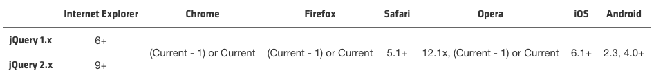- jQuery 1.x는 IE6+ 을 지원
- jQuery 2.x는 IE9+ 을 지원
- 지원범위 밖에서 발생하는 문제에 대해서는 추가적인 버그 패치가 없다 e.g. iOS4, android 2.1, 2.2, 3.0, Chrome 구버전, ...